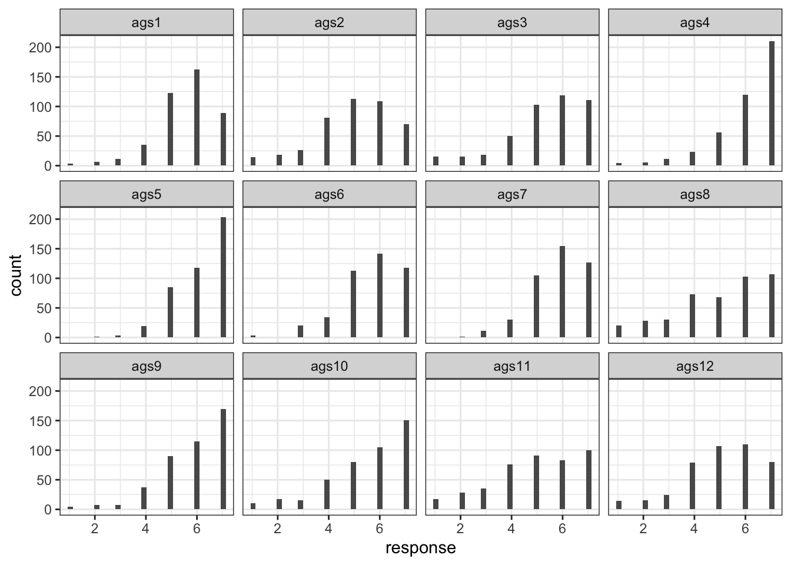
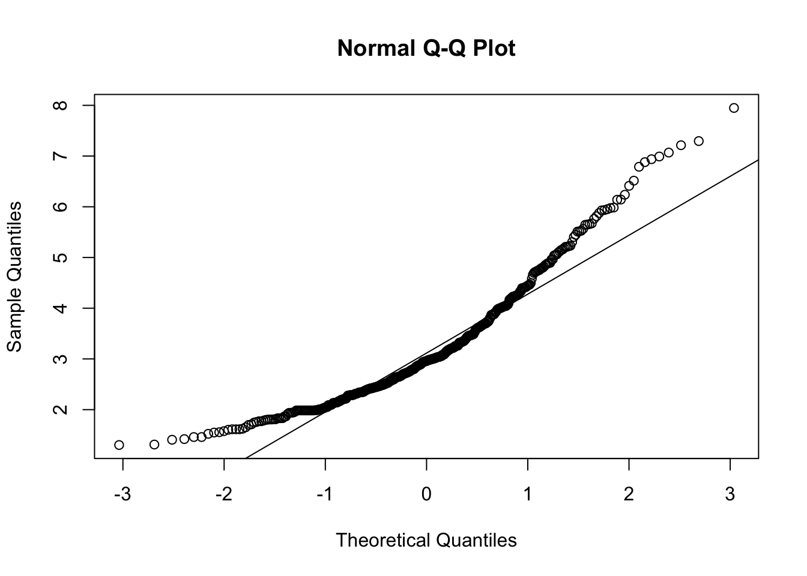
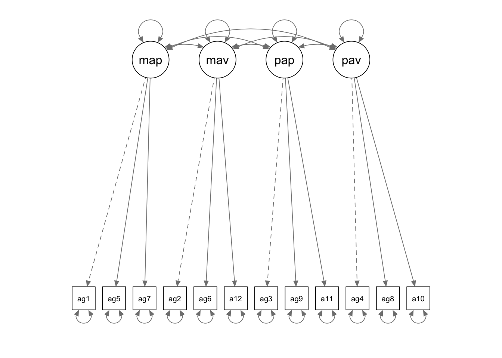

library(tidyverse)
library(lavaan)
library(ggdag)1 Traditional CFA Workflow
Example 1: Toxic Striving Energy
The first example we’ll look at is from Finch (2015), chapter 3. The practice dataset is introduced on page 10. It is from a study about human motivation. The dataset is a weird questionnaire called the ‘Achievement Goal Scale’ (AGS), which asks people 12 questions about how much toxic striving energy they have. The dataset provided seems to have lots of mysterious columns in it, but we’re probably good to just keep the columns with responses to the AGS questionnaire:
### Load the data
dat_raw <- foreign::read.spss('../data/finch-and-french/edps744.sav')
### Clean the data
dat_ags <- dat_raw %>%
# Convert to a data frame for ease of use
as.data.frame() %>%
# Keep only columns that start with the prefix 'ags' followed by a question number
select(matches("ags\\d")) Data Exploration
We don’t want to do too much exploration before fitting our factor models, because the whole game of CFA is to commit to our hypotheses before checking what the data looks like, so we don’t mislead ourselves with forking paths. But just for fun, we can explore the distributions of the answers to each of the 12 questions:
dat_ags %>%
# Pivot to prepare the data for visualization
pivot_longer(
cols = everything(),
names_to = "question",
values_to = "response",
names_transform = list(question = fct_inorder)
) %>%
# Plot
ggplot() +
geom_histogram(aes(x = response)) +
theme_bw() +
facet_wrap(~question)
Seems like some questions have different means and variances from each other. For example, the answers to ags11 and ags12 are relatively flat, while the answers to ags4 and ags5 are more bunched up around the highest values. The responses clearly skew towards higher values in aggregate.
We can also do some healthy exploration of missingness in the dataset. For starters: what proportion of values are missing in each row?
dat_ags %>%
# Calculate the proportion of missing values
summarise_all(~ sum(is.na(.)) / (sum(is.na(.) + sum(!is.na(.))))) %>%
# Rounding to make the results more presentable
mutate(across(everything(), round, 6)) %>%
# Create the table
knitr::kable(title = "Proportion of Missing Responses in Each Column") Warning: There was 1 warning in `mutate()`.
ℹ In argument: `across(everything(), round, 6)`.
Caused by warning:
! The `...` argument of `across()` is deprecated as of dplyr 1.1.0.
Supply arguments directly to `.fns` through an anonymous function instead.
# Previously
across(a:b, mean, na.rm = TRUE)
# Now
across(a:b, \(x) mean(x, na.rm = TRUE))| ags1 | ags2 | ags3 | ags4 | ags5 | ags6 | ags7 | ags8 | ags9 | ags10 | ags11 | ags12 |
|---|---|---|---|---|---|---|---|---|---|---|---|
| 1.1e-05 | 5e-06 | 5e-06 | 1.6e-05 | 1.6e-05 | 1.1e-05 | 1.6e-05 | 1.6e-05 | 1.1e-05 | 2.2e-05 | 1.1e-05 | 1.6e-05 |
That’s very little missingness. Probably no need to do multiple imputation here.
The authors also do a preliminary test of whether the responses are normally distributed, since this is one of the fundamental assumptions of maximum likelihood estimation. Kristoffer Magnusson has created a cool interactive teaching tool that nicely illustrates this point. It is worth remembering that we do not make this type of assumption for linear regression in general – only for maximum likelihood estimates. All we need assume for linear regression is that the residuals are normally distributed, as opposed to the data themselves. This common misunderstanding can lead researchers to commit what Richard McElreath has called ‘histomancy’.
To evaluate the assumption of normalness underlying maximum likelihood estimation, the authors do what seems to be a multivariate version of a classic ‘normal probability plot’. These are explained nicely in this stack exchange thread. They also produce some of the classic tests of skew and kurtosis, which I don’t want to get into here. This youtuber has nice introductory videos about these topics.
# Run the Mardia tests for normalness
mardia.object <- psych::mardia(dat_ags)
# Plot the multivariate version of the normal probability plot
plot(mardia.object)
# Present the outputs we're interested in
tibble(
"Skew" = mardia.object$skew,
"Skew p-value" = mardia.object$p.skew,
"Kurtosis" = mardia.object$kurtosis,
"Kurtosis p-value" = mardia.object$p.kurt
) %>%
knitr::kable()| Skew | Skew p-value | Kurtosis | Kurtosis p-value |
|---|---|---|---|
| 2359.475 | 0 | 40.52999 | 0 |
The plotted points don’t seem to fit the straight line super well, which suggests that the normalness assumption may not hold here. Also, the hypothesis tests for skew and kurtosis return some mighty low p-values, suggesting that we’ve got lots of each of them. So maybe maximum likelihood estimation isn’t such a good idea here?
The authors proceed with it anyway for pedogogical reasons, because they want to illustrate how the maximum likelihood estimates differ from estimates arrived at using other methods.
“In actual practice, given the lack of multivariate normality that seems apparent in the previous results, we would likely not use ML and instead rely on the alternative estimation approach.”
Model Fitting
The researchers who collected the data do what good factor analysts do: they look to the literature to set up some clear and specific candidate hypotheses, and see the degree to which this new data is compatible with each of them.
One of the candidate hypotheses is that a person’s toxic striving energy (‘achievement goal orientedness’?) is secretly driven by four platonic unobservable things, namely:
Mastery Approach ‘MAP’ (eg. “I want to learn as much as possible”);
Mastery Avoidant ‘MAV’ (eg. “I want to avoid learning less than I possibly could”);
Performance Approach ‘PAP’ (eg. “I want to do well compared to other students”);
Performance Avoidant ‘PAV’ (eg. “It is important for me to avoid doing poorly compared to other students”)
We’ll call the above hypothesis H1. But there’s another hypothesis that says actually the ‘Mastery’ variables are just one monolithic thing, so really there are only 3 factors, namely ‘Mastery’, ‘PAP’, and ‘PAV’. We’ll call this one H2. These will be the two candidate hypotheses we’re gonna test via factor analysis.
The way lavaan works is that you need to separately define the model syntax as a string, and then feed that string to one of the model-fitting functions like cfa() . Then we can call the summary() function to get a big table of outputs.
# Define the relationships from my hypothesis
h1.definition <-
'map=~ags1+ags5+ags7
mav=~ags2+ags6+ags12
pap=~ags3+ags9+ags11
pav=~ags4+ags8+ags10'
# Fit the model
h1.fit <- cfa(
data = dat_ags,
model = h1.definition
)
# Look at the results
h1.summary <- summary(h1.fit, fit.measures = TRUE, standardized = TRUE)
h1.summarylavaan 0.6.16 ended normally after 48 iterations
Estimator ML
Optimization method NLMINB
Number of model parameters 30
Used Total
Number of observations 419 432
Model Test User Model:
Test statistic 328.312
Degrees of freedom 48
P-value (Chi-square) 0.000
Model Test Baseline Model:
Test statistic 3382.805
Degrees of freedom 66
P-value 0.000
User Model versus Baseline Model:
Comparative Fit Index (CFI) 0.915
Tucker-Lewis Index (TLI) 0.884
Loglikelihood and Information Criteria:
Loglikelihood user model (H0) -7014.070
Loglikelihood unrestricted model (H1) -6849.914
Akaike (AIC) 14088.141
Bayesian (BIC) 14209.277
Sample-size adjusted Bayesian (SABIC) 14114.078
Root Mean Square Error of Approximation:
RMSEA 0.118
90 Percent confidence interval - lower 0.106
90 Percent confidence interval - upper 0.130
P-value H_0: RMSEA <= 0.050 0.000
P-value H_0: RMSEA >= 0.080 1.000
Standardized Root Mean Square Residual:
SRMR 0.055
Parameter Estimates:
Standard errors Standard
Information Expected
Information saturated (h1) model Structured
Latent Variables:
Estimate Std.Err z-value P(>|z|) Std.lv Std.all
map =~
ags1 1.000 0.840 0.746
ags5 0.774 0.057 13.564 0.000 0.650 0.682
ags7 1.100 0.064 17.263 0.000 0.924 0.895
mav =~
ags2 1.000 0.923 0.627
ags6 0.974 0.078 12.523 0.000 0.899 0.796
ags12 1.039 0.096 10.805 0.000 0.959 0.644
pap =~
ags3 1.000 1.284 0.840
ags9 0.853 0.038 22.349 0.000 1.095 0.870
ags11 1.103 0.052 21.178 0.000 1.416 0.841
pav =~
ags4 1.000 0.929 0.771
ags8 1.599 0.084 19.091 0.000 1.486 0.855
ags10 1.525 0.073 20.861 0.000 1.418 0.921
Covariances:
Estimate Std.Err z-value P(>|z|) Std.lv Std.all
map ~~
mav 0.709 0.079 9.000 0.000 0.914 0.914
pap 0.066 0.060 1.093 0.274 0.061 0.061
pav 0.056 0.043 1.289 0.197 0.072 0.072
mav ~~
pap 0.163 0.072 2.265 0.023 0.138 0.138
pav 0.178 0.053 3.355 0.001 0.207 0.207
pap ~~
pav 1.143 0.102 11.236 0.000 0.958 0.958
Variances:
Estimate Std.Err z-value P(>|z|) Std.lv Std.all
.ags1 0.562 0.047 11.951 0.000 0.562 0.443
.ags5 0.486 0.038 12.780 0.000 0.486 0.535
.ags7 0.211 0.032 6.602 0.000 0.211 0.198
.ags2 1.312 0.102 12.825 0.000 1.312 0.606
.ags6 0.469 0.049 9.537 0.000 0.469 0.367
.ags12 1.300 0.103 12.669 0.000 1.300 0.586
.ags3 0.690 0.059 11.671 0.000 0.690 0.295
.ags9 0.386 0.036 10.769 0.000 0.386 0.244
.ags11 0.831 0.071 11.639 0.000 0.831 0.293
.ags4 0.588 0.045 12.959 0.000 0.588 0.405
.ags8 0.815 0.070 11.602 0.000 0.815 0.269
.ags10 0.362 0.043 8.423 0.000 0.362 0.153
map 0.706 0.083 8.514 0.000 1.000 1.000
mav 0.852 0.128 6.655 0.000 1.000 1.000
pap 1.648 0.158 10.416 0.000 1.000 1.000
pav 0.864 0.094 9.198 0.000 1.000 1.000semPlot::semPaths(h1.fit)
That’s a lot of outputs. Let’s break down the output into smaller bite-sized chunks.
Goodness of Fit Statistics
Chi-Squared Statistic
The first thing to look at is the chi-squared statistic from the ‘User Model’, IE the model I, the user, have just fit. I like to think of this as a measure of how different the model’s reconstructed correlation matrix looks compared to the actual empirical correlation matrix of the data. So we use this statistic to test the null hypothesis “there is no significant difference between model’s reconstructed correlation matrix and the empirical one”. So, confusingly, we’re actually hoping to accept the null hypothesis here. This model returns a value of 328.312 with a vanishingly small p-value, so we reject the null hypothesis, which is bad: it suggests our model isn’t doing a good job replicating the empirical correlation matrix.
Here’s a quote from Gorsuch (1983) that explains this stuff from the slightly different angle:
“The test of significance [for a CFA model fit by maximum likelihood] gives a chi-square statistic with the null hypothesis being that all the population covariance has been extracted by the hypothesized number of factors. If the chi-square is significant at the designated probability level, then the residual matrix still has significant covariance in it.”
So this chi-squared statistic provides a first look at goodness-of-fit, but Finch (2015) say it is actually not very trustworthy in practice because the null hypothesis is sort of crazy: we want a more permissive test than just whether the model is perfectly recreating the empirical correlation matrix.
“this statistic is not particularly useful in practice because it tests the null hypothesis that [the model-reconstructed correlation matrix is equal to the empirical correlation matrix], which is very restrictive. The test will almost certainly be rejected when the sample size is sufficiently large… In addition, the chi-square test relies on the assumption of multivariate normality of the indicators, which may not be tenable in many situations.”
So we’re gonna wanna look at statistics other than just chi-squared for goodness-of-fit, but it seems like a fine place to start. Let’s look at the chi-squared statistic of our model:
### Create a nice summary table
tibble(
Test = "standard chi-squared",
`DF` = h1.summary$test$standard$df,
`Test Statistic` = round(h1.summary$test$standard$stat, 2),
`p-value` = h1.summary$test$standard$pvalue
) %>%
mutate(across(everything(), as.character)) %>%
pivot_longer(everything()) %>%
knitr::kable()| name | value |
|---|---|
| Test | standard chi-squared |
| DF | 48 |
| Test Statistic | 328.31 |
| p-value | 0 |
It takes lots of skill and experience to have a sense of whether a test statistic is big or small given the degrees of freedom at play, but we can see from the p-value that we reject the null hypothesis in a big way. This is bad – it suggests that, given our assumptions, there’s a big difference between our model and the data.
Root Mean Squared Error Approximation (RMSEA)
Another one people like to go with is the Root Mean Squared Error Approximation (RMSEA). This statistic takes some math and background to understand, which I’m not going to go over here. I found this document to be the clearest (but also pretty mathy) explanation.
Essentially, RMSEA is a weighted sum of the discrepancies between the model’s reconstructed correlation matrix and the empirical correlation matrix. But it also does a nice thing where it discounts model complexity and sample size to help us not overfit. Here’s the definition:
\(\text{RMSEA} = \sqrt{\dfrac{χ^2 - \text{df}}{\text{df}(n-1)}}\)
See how it takes the chi-squared statistic and divides it by degrees of freedom (as a proxy for model complexity) and sample size? This makes for a more conservative measure of goodness-of-fit. Apparently the square-root is used “to return the index to the same metric as the original standardized parameters”. I don’t really understand that part… is it because a Chi-squared random variable is the squared version of a normal standard variable?
As with the raw chi-squared statistic, we want RMSEA to be small because it is intended as a measure of the distance between the empirical correlation matrix and the model-estimated correlation matrix. According to Finch (2015), people like to say:
RMSEA <= 0.05 is a ‘good fit’;
0.05 < RMSEA <= 0.08 is an ‘ok fit’
RMSEA > .08 is a ‘bad fit’.
Let’s check the RMSEA of our model:
# make a nice summary table
h1.summary$fit %>%
as_tibble(rownames = "stat") %>%
filter(str_detect(stat, "rmsea")) %>%
knitr::kable()| stat | value |
|---|---|
| rmsea | 0.1180574 |
| rmsea.ci.lower | 0.1061525 |
| rmsea.ci.upper | 0.1303058 |
| rmsea.ci.level | 0.9000000 |
| rmsea.pvalue | 0.0000000 |
| rmsea.close.h0 | 0.0500000 |
| rmsea.notclose.pvalue | 0.9999999 |
| rmsea.notclose.h0 | 0.0800000 |
Yikes – looks like our whole RMSEA, as well as its confidence interval, are above the ‘bad fit’ conventional threshold of .08. This corroborates what we saw with the chi-squared statistic above.
Comparative Fit Index (CFI) and Tucker-Lewis Index (TLI)
CFI seems to be the most trusted and widely-used tool for assessing goodness of fit in a CFA. Basically the idea is that we ask: “how much does the chi-squared statistic of my model differ from the chi-squared statistic of the worst model I can think of?”, where the conventional “worst model I can think of” is the model where I assume all of my observed variables are totally uncorrelated. This sort of has the opposite flavour of the deviance statistic I’m already familiar with, which compares the current model with “the best model I can think of.”
\(\text{CFI} = 1 - \dfrac{\text{max}(χ^2_T - \text{df}_T, 0)}{\text{max}(χ^2_0 - \text{df}_0, 0)}\)
Actually, the numerator and denominator are both equal to the ‘non-centrality parameter’ of their respective candidate distributions. I’m not gonna get into this, but this is an idea that also shows up in power analysis as a way of comparing the null and candidate hypotheses.
We want to end up with a CFI as close to 1 as possible, because that suggests a big difference between my model and the worst possible model. So people say we can sort of think of this as analogous to \(R^2\) from linear regression. People seem to have adopted 0.95 as an arbitrary cutoff for ‘good fit’ for the CFI.
If you want to learn more about the CFI, I found this article a well-written resource.
Tucker-Lewis Index seems to be pretty similar to CFI, and we interpret it in the same way. Let’s look at both of them:
# Make a nice summary table
h1.summary$fit %>%
as_tibble(rownames = "stat") %>%
filter(str_detect(stat, "cfi|tli")) %>%
knitr::kable()| stat | value |
|---|---|
| cfi | 0.9154874 |
| tli | 0.8837951 |
Looks like the CFI and TLI look ok, but don’t meet the conventional .95 cutoff. So they are in line with the chi-squared and RMSEA in suggesting that our goodness-of-fit isn’t so good.
Convergent Validty
Like I said before: when I’m doing factor analysis, my goal is to convince my research peers that my observed variables are confounded by an unobserved variable, and that therefore they provide a way of ‘measuring’ that unobserved variable. This seems like an ontologically dubious framing, and it also seems impossible to prove. But people who do research have settled on a few ways of trying to make this case.
One such way is to take all of the measured variables I’m imagining to be caused by the same unmeasured factor and show that they are indeed correlated with each other, because this is what we would expect under the simple DAG where they are all confounded by the same latent variable. When this happens, I can say that my factor has Convergent Validity. In the words of Gorsuch (1983):
“Convergent validity occurs when several variables deemed to measure the same construct correlate with each other.”
Or, as Kline (2011) puts it:
“Variables presumed to measure the same construct show convergent validity if their intercorrelations are appreciable in magnitude.”
It seems like to make the jump from ‘these measured variables are correlated’ to ‘these measured variables are caused by a single shared latent factor’ I would need to be also making the further assumption that there aren’t other unmeasured confounders muddying up the observed covariances. It’s DAGs all the way down…
Based on the textbooks I’m working from, here are a few questions I can answer if I want to make the case for Convergent Validity:
- Are the factor loadings statistically significant?
- Are the standardized factor loadings pretty big (IE pretty close to 1)?
- Are the standardized within-factor loadings pretty similar to each other?
- Do the measurements seem to have good ‘reliability’ as measured by something like Chronbach’s Alpha, Average Variance Extracted, or Composite Reliability?
- Are all of the residual variances less than .50, IE is the model explaining at least half the variance of each model?
First we can look at the factor loadings. These are essentially just the regression coefficients of each factor on each of the outcome variables for which it was allowed to be a covariate. So we want them to be big and significant.
### Make a nice summary table of the factor loadings
h1.summary$pe %>%
as_tibble() %>%
# Keep only the rows with info on factor loadings
slice(1:12) %>%
# Clean up the important values, then combine them into a single column
mutate(
std.all = round(std.all, 2),
std.all = paste0(std.all, ", pvalue = ", pvalue, ")")
) %>%
# reformat the table
select(lhs, rhs, std.all) %>%
pivot_wider(
names_from = "lhs",
values_from = "std.all",
values_fill = "0"
) %>%
column_to_rownames("rhs") %>%
knitr::kable(caption = "Standardized factor loadings and p-values")| map | mav | pap | pav | |
|---|---|---|---|---|
| ags1 | 0.75, pvalue = NA) | 0 | 0 | 0 |
| ags5 | 0.68, pvalue = 0) | 0 | 0 | 0 |
| ags7 | 0.9, pvalue = 0) | 0 | 0 | 0 |
| ags2 | 0 | 0.63, pvalue = NA) | 0 | 0 |
| ags6 | 0 | 0.8, pvalue = 0) | 0 | 0 |
| ags12 | 0 | 0.64, pvalue = 0) | 0 | 0 |
| ags3 | 0 | 0 | 0.84, pvalue = NA) | 0 |
| ags9 | 0 | 0 | 0.87, pvalue = 0) | 0 |
| ags11 | 0 | 0 | 0.84, pvalue = 0) | 0 |
| ags4 | 0 | 0 | 0 | 0.77, pvalue = NA) |
| ags8 | 0 | 0 | 0 | 0.85, pvalue = 0) |
| ags10 | 0 | 0 | 0 | 0.92, pvalue = 0) |
Firstly, notice that all of the non-fixed loadings are highly statistically significant, with all p-values smaller than .01. This is good! Super statistically-significant loadings are a necessary sign that our measured variables are actually good proxies for the imaginary ‘latent’ factor we’re purporting to use them to measure.
Next, Kline (2011) says that we can start assessing convergent validity by just looking at the standardized loadings can in isolation. In his words on page 344:
“[with reference to a CFA model he has fit]: A few other standardized coefficients are rather low, such as .433 for the self-talk indicator of constructive thinking, so evidence for convergent validity is mixed.”
To my eye it looks like some of the standardized loadings on the ‘mav’ factor are pretty low. Also, it seems like only ‘pap’ has really consistent loadings across all of its measured variables: the other three factors all have a bunch of variance between their loadings. So this all seems like a bit of a red flag.
Kline (2011), on page 307, gives yet another way of assessing convergent validity: he fits a CFA, then asks whether “the majority” of the variances of the observed variables have been explained, IE whether the standardized residual variances are <50. I guess the idea is that the amount of variance explained for a variable by a factor depends on how correlated In his words:
“[in reference to one of his models:] [the] model fails to explain the majority (> .50) of variance for a total of four out of eight indicators, which indicates poor convergent validity.”
Let’s have a look at the residual variances. These are just the proportion of the empirical variance of each measured variable that is left unexplained by the linear models that make up the factor analysis.
h1.summary$pe %>%
as.data.frame() %>%
filter(grepl("ags\\d", lhs)) %>%
mutate(factor = case_when(
lhs %in% c("ags1", "ags5", "ags7") ~ "map",
lhs %in% c("ags2", "ags6", "ags12") ~ "mav",
lhs %in% c("ags3", "ags9", "ags11") ~ "pap",
lhs %in% c("ags4", "ags8", "ags10") ~ "pav",
)) %>%
select(factor, "var" = lhs, std.all) %>%
knitr::kable()| factor | var | std.all |
|---|---|---|
| map | ags1 | 0.4434896 |
| map | ags5 | 0.5345470 |
| map | ags7 | 0.1980907 |
| mav | ags2 | 0.6063553 |
| mav | ags6 | 0.3670913 |
| mav | ags12 | 0.5858185 |
| pap | ags3 | 0.2950189 |
| pap | ags9 | 0.2436200 |
| pap | ags11 | 0.2927905 |
| pav | ags4 | 0.4050030 |
| pav | ags8 | 0.2694999 |
| pav | ags10 | 0.1526773 |
Looks like the model has mostly done a good job for the ‘Performance’ factors, with all variables having at least ~60% of their variance explained. But the ‘Mastery’ factors are worse, especially ‘mav’, with two of its three variables having only ~40% of their variances explained. This is yet more evidence that the ‘mav’ factor isn’t doing so great a job.
~~Lastly, Gorsuch suggests another way of testing for convergent validity:
factor loadings of several variables hypothesized to relate to the construct can also be tested for significance. They could be specified as equal for the one model and the chi-square for that model subtracted from another hypothesized factor structure where they are allowed to vary. If the two differ significantly from each other, then one or more of the variables is more related to the construct than one or more of the other variables.”
Let’s try this out: we’ll fit another model that assumes all of the within-factor loadings are equal, and see if that results in a statistically significant reduction in goodness-of-fit. If it does, then we lose some evidence of convergent validity.~~
Reliability
In looking for Convergent Validity we were mostly just comparing the parameter estimates (loadings) and residual variances of individual variables. We were trying to figure out whether these variables belong together. But in addition to tests of validity to decide which columns belong in the scale, people like to test the overall scale itself by invoking the terrible concept named ‘Reliability’. Reliability purports to be ‘true variance in the underlying construct’ as a proportion of ‘total variance in the scores of a subscale’. This seems to me like an ontologically dubious concept, but it’s what we’re working with.
This all feels pretty similar to Convergent Validity to me. We’re just trying to show that the data are consistent with all of the factor-level columns being confounded by the same variable.
The all-time classic ‘reliability’ measure is called Cronbach’s Alpha. Cronbach didn’t actually invent it, so hello Stigler’s Law. Here’s what it looks like:
\(\alpha = (\dfrac{k}{1-k}) (1 - \dfrac{\sum\sigma_y^2}{\sigma_T^2})\)
The term on the right is doing most of the work: its denominator is the variance of the column that contains the rowwise sums of my dataset. Its numerator is the sum of the variances of each column. So we’re asking: ‘is the variance of the sums larger than the variance of the individual columns?’ This will be true if the columns are generally pretty correlated, because the sums will stack up the raw values, instead of them cancelling each other out. So really we’re just asking: are the columns generally pretty correlated?‘. If my columns are pretty correlated and I make the standard assumption that no other latent factors are influencing my observed values (an insane assumption), then I can feel comfortable saying that Cronbach’s Alpha is useful for figuring out whether my measurements are all loading on the same ’latent’ variable. Since the observed values are gonna be consistent with each other if this is true, people like to say that Cronbach’s Alpha gives a picture of ‘Internal Consistency Reliability’.
Like with Convergent Validity, this is all just another way of asking how correlated my within-factor measured variables are with each other.
Let’s calculate Cronbach’s Alpha for each of the subscales I’ve used to define my supposed factors:
### Split the dataset into the subscales assumed by my factor model
subscales <- list(
map = dat_ags %>% select(ags1, ags5, ags7),
mav = dat_ags %>% select(ags2, ags6, ags12),
pap = dat_ags %>% select(ags3, ags9, ags11),
pav = dat_ags %>% select(ags4, ags8, ags10)
)
### Calculate Chronbach's Alpha for each subscale, then analyze.
alphas <- subscales %>%
map(psych::alpha) %>%
map(summary) %>%
knitr::kable()
Reliability analysis
raw_alpha std.alpha G6(smc) average_r S/N ase mean sd median_r
0.82 0.82 0.76 0.6 4.6 0.015 5.9 0.9 0.6
Reliability analysis
raw_alpha std.alpha G6(smc) average_r S/N ase mean sd median_r
0.77 0.77 0.71 0.52 3.3 0.018 5.3 1.2 0.45
Reliability analysis
raw_alpha std.alpha G6(smc) average_r S/N ase mean sd median_r
0.88 0.89 0.84 0.73 7.9 0.0095 5.4 1.3 0.74
Reliability analysis
raw_alpha std.alpha G6(smc) average_r S/N ase mean sd median_r
0.87 0.88 0.85 0.7 7.1 0.01 5.6 1.3 0.72According to Kline (2011), these all look like good results, so they help me feel good about claiming convergent validity:
“Generally, coefficients around .90 are considered”excellent,” values around .80 as “very good,” and values about .70 as “adequate.””
Cronbach’s Alpha has some drawbacks as a measure of ‘reliability’, which seem pretty clear to me. For example, as (Brown?) explains:
What if some of the items in my subscale are confounded by something other than our latent factor? That could make things crazy, IE it could overstate or understate the ‘true’ Cronbach Alpha.
Even if there’s no other confounding at all, my Cronbach Alpha is going to be understated if my variables are all influenced by the factor to different degrees, IE if the loadings are different, IE if the variables are not ‘Tau-Equivalent’. And this will almost always be the case”
“The condition of tau equivalence is frequently not realized in actual data sets, in part because the units of measurement are often arbitrary.”
so Kline (2011) says to also calculate the Average Variance Extracted (AVE), which is simply the average of the within-factor squared factor loadings. This is based on the idea that a squared factor loading is the variance explained of the variable by that factor. The convention is that if the AVE > 0.5, then you can feel good about claiming convergent validity. I guess this makes sense – seems like a pretty simple and ad-hoc way of asking whether your loadings are generally on the same page. But obviously if I have lots of observed variables defining the factor then I’m at risk of having a bunch of high loadings and a bunch of low loadings, resulting in a misleadingly moderate average? To me it seems like we might as well just look at the raw loadings themselves – no need to look at an average here.
But just for fun, let’s calculate the AVE. Rather than doing it manually, we can use a ready-made function from the semTools package
semTools::AVE(h1.fit) %>%
knitr::kable()| x | |
|---|---|
| map | 0.6115914 |
| mav | 0.4556936 |
| pap | 0.7179750 |
| pav | 0.7422385 |
Based on the rule-of-thumb that we want the AVE to be at least .50, it seems like the ‘mav’ factor is having some trouble. It also had the lowest Cronbach Alpha. So maybe the observed variables I’m using to measure it aren’t actually doing a great job? This hurts convergent validity for that factor.
Lastly, we can also try to measure this unicorn of ‘reliability’ by just directly asking “what proportion of the total variance is explained by the factor model?”. People like to do this by summing all the factor loadings, squaring that sum, and dividing it by itself plus the sum of the residual variances of the variables (IE dividing it by the total empirical variance of the variable). They call this one the Composite Reliability (CR). It is the one that Brown (2006) says to use.
semTools::compRelSEM(h1.fit) %>%
knitr::kable()| x | |
|---|---|
| map | 0.8164263 |
| mav | 0.6689921 |
| pap | 0.8803380 |
| pav | 0.9016062 |
Apparently the rule of thumb for this one is the same as for Cronbach’s Alpha. So we can feel good about all of them except for ‘mav’, which has taken a beating via these 3 checks.
Discriminant Validity
Next let’s look at the estimated correlations between the factors. If my hypothesis H1 is true then we should expect all of the factors to be pretty uncorrelated from each other, but if H2 is true then we should expect MAP and MAV to be super correlated with each other, because H2 thinks there’s no such thing as MAP and MAV – there’s just one big ‘Mastery’ factor:
### Make a nicer version of the correlation matrix of the factors
h1.summary$pe %>%
as_tibble() %>%
# Keep only the rows with info on factor loadings
slice(25:34) %>%
select(lhs, rhs, std.lv) %>%
mutate(
std.lv = round(std.lv, 2),
across(everything(), as.character)
) %>%
pivot_wider(
names_from = "lhs",
values_from = "std.lv",
values_fill = " "
) %>%
column_to_rownames("rhs") %>%
knitr::kable(caption = "Correlation matrix of the factors")| map | mav | pap | pav | |
|---|---|---|---|---|
| map | 1 | |||
| mav | 0.91 | 1 | ||
| pap | 0.06 | 0.14 | 1 | |
| pav | 0.07 | 0.21 | 0.96 | 1 |
Interesting – the ‘Mastery’ factors and the ‘Performance’ factors each seem to be very correlated with each other, while being nice and uncorrelated with the two factors that make up the other. This suggests that we have bad discriminant validity between the imagined two types of ‘Mastery’ and two types of ‘Performance’ – the model can’t really tell them apart as separate things. This makes it harder for me to argue that they are in fact separate things. But then again, maybe my hypothesis is that the within-skill factors should be highly correlated. Anyhow, the fact that the ‘Mastery’ and ‘Performance’ factors are all pretty uncorrelated with each other is a good thing for both hypotheses.
Brown (2006) gives some nice advice about how to assess discriminant validty, and how to deal with it if you have it:
“In applied research, a factor correlation that exceeds .80 or .85 is often used as the criterion to define poor discriminant validity. When two factors are highly overlapping, a common research strategy is to respecify the model by collapsing the dimensions into a single factor and determine whether this modification results in a significant degradation in model fit. If the respecified model provides an acceptable fit to the data, it is usually favored because of its superior parsimony.”
Gorsuch (1983) suggests doing something similar:
“[fit the model] with the qualification that the correlations between one or more of the constructs being tested for discriminant validity is one. The difference between chi-squares from [this model vs the model where the correlations are allowed to freely vary] tests whether the constructs have a correlation significantly less than 1.0. If the correlation between the factors for the two constructs is not significantly different from 1.0, the difference chi-square will be insignificant. This means the null hypothesis of no discriminatory validity would be accepted. If the difference chi-square is significant, then the null hypothesis is rejected and the model that assumes discriminatory validity by allowing the correlation to be less than one is the more appropriate one.”
This has the flavour of a likelihood-ratio test. Let’s do it. First we need to fit the model where the correlation between the Mastery factors and the correlation between the ‘Performance’ factors are both constrained to be 1:
# Define the relationships from my hypothesis
h1_orthogonal.definition <-
'map=~ags1+ags5+ags7
mav=~ags2+ags6+ags12
pap=~ags3+ags9+ags11
pav=~ags4+ags8+ags10
map ~~ 1*mav
pap ~~ 1*pav
'
# Fit the model
h1_orthogonal.fit <- cfa(
data = dat_ags,
model = h1_orthogonal.definition
)
# Compare the goodness-of-fit statistics for the two models
anova(h1.fit, h1_orthogonal.fit) %>%
knitr::kable()| Df | AIC | BIC | Chisq | Chisq diff | RMSEA | Df diff | Pr(>Chisq) | |
|---|---|---|---|---|---|---|---|---|
| h1.fit | 48 | 14088.14 | 14209.28 | 328.3120 | NA | NA | NA | NA |
| h1_orthogonal.fit | 50 | 14096.44 | 14209.50 | 340.6065 | 12.29456 | 0.1108363 | 2 | 0.0021393 |
Looks like the reduction in chi-squared goodness-of-fit is statistically significant when we force the within-skill factors to be perfectly correlated. So, according to the Gorsuch (1983) quote above, we can reject the null hypothesis that the within-skill factors are perfectly correlated. This gives a justification for continuing to distinguish between them as separate factors, and helps me make a believable claim that my posited factors are in fact different things.
Actually, I think another way we could have done this would be to just fit the model where we just define one big factor for ‘Mastery’ and one big factor for ‘Performance’. I tried this and it returned even worse fit, which means the extra parameters (the correlation parameters) are significantly improving fit in the pure h1 model.
Conclusion
All-in-all it seems like neither of these hypotheses do a great job. Sure, the ‘Performance’ factors have good convergent validity, and we see good discriminant validity between the ‘Performance’ and ‘Mastery’ factors, but the ‘Mastery’ factors don’t have great convergent validity and fitting a single monolithic ‘Mastery’ factor doesn’t improve things.
I can make a better model by dropping the measured ‘Mastery’ variables that aren’t having lots of their variance explained by the ‘Mastery’ factors, but this is contrary to the spirit of CFA. If I want to test a different hypothesis then I should collect a different sample.
For a nice template of a more formal presentation of the results of a CFA, see Brown (2006) chapter 4 appendix 3.
Brown, Timothy A. 2006. Confirmatory Factor Analysis for Applied Research.
Finch, French, W. Holmes. 2015. Latent Variable Modeling with r.
Gorsuch, Richard L. 1983. Factor Analysis, 2nd Edition.
Kline, Rex B. 2011. Principles and Practice of Structural Equation Modeling.